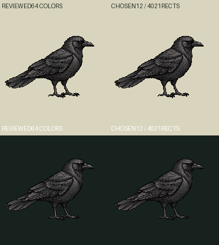
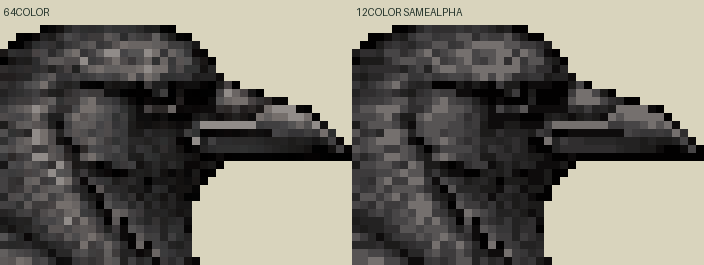
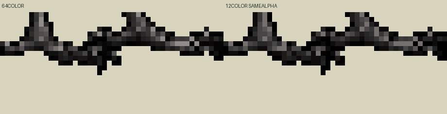

Reviewed64colors → chosen12totalcolors (11opaqueRGB+transparent). Exact local codec4021rectangles<=4096;13colors produces4141 and fails.0newdrawings/calls. Same186canvas, density1, exact binaryalpha mask unchanged. Expect reduced feather/eye shading detail; no automatic visual acceptance.
Reviewed64color186CSS | chosen12color186CSS | enlargedchosen372CSS
One staticgroundidle120authoredticks at30Hz. Metadata pivot rounded107.53125,145.3125→108,145 (delta+.46875,-.3125world); no bitmap translation. contacts[], geometryReviewedfalse/supportnull. Physical toe support unapproved. Productionpins/fidelitylabels UNSUPPLIED; fullschemaZod NOT_RUN/Macpending.



Loading…